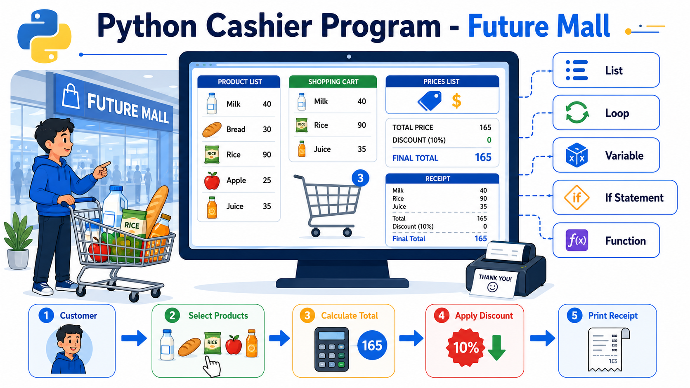
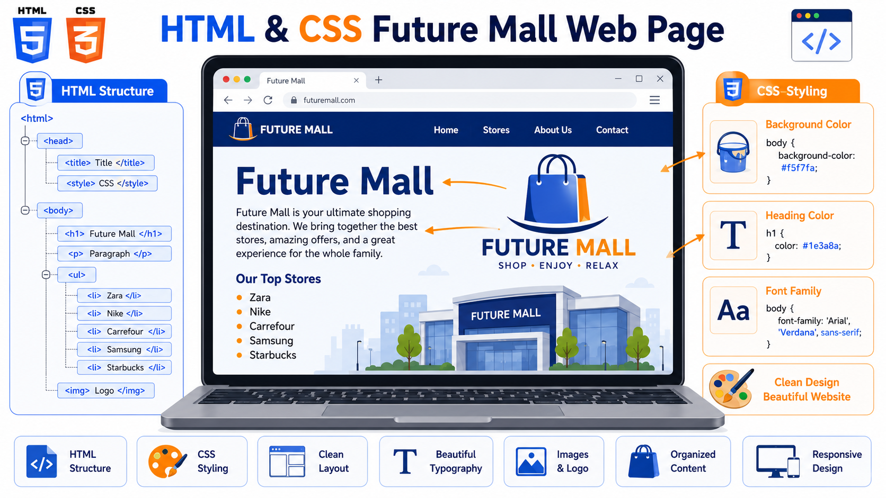
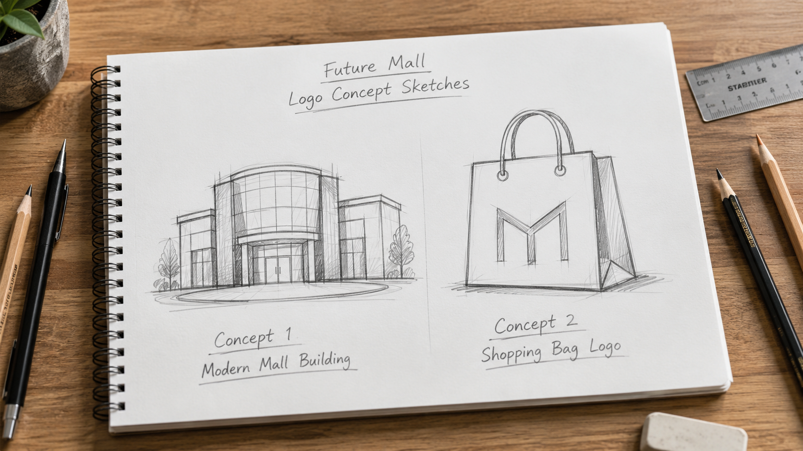
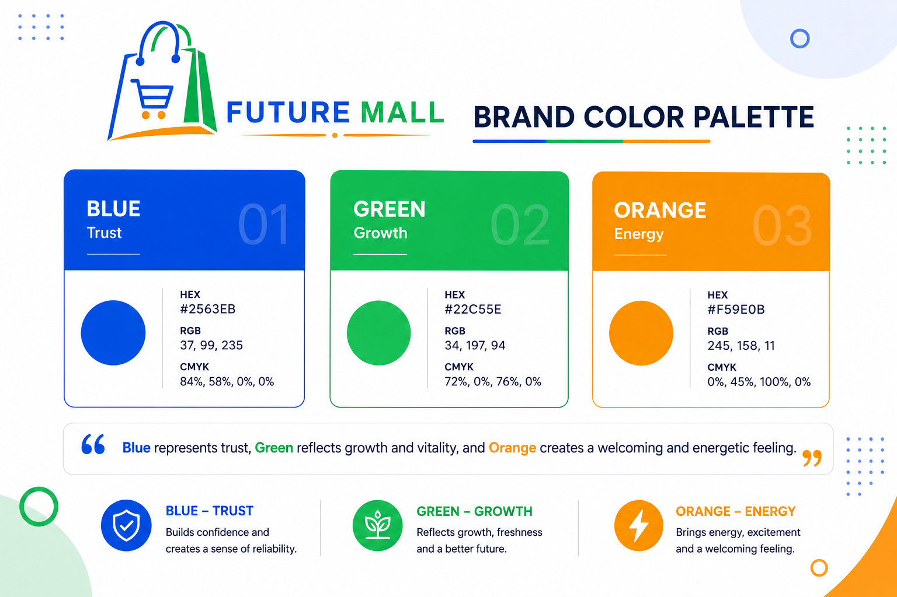
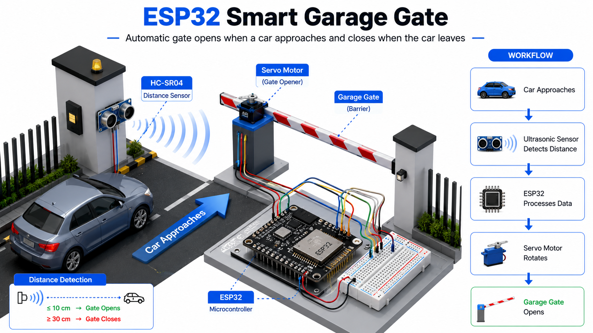

https://docs.google.com/document/d/14jnSAGHQeI3TkVNRNM6yOBqh64WmSKkIqveD-HJiaxk/edit?usp=sharing
التاسك الأول في الحقيقة متقسم لـ 3 أجزاء مستقلين، يعني كأنهم 3 واجبات جوه نفس التاسك.
https://chatgpt.com/s/m_6a6d259eda7c81919def1c394bc590ec

الفكرة كلها إنك هتعمل برنامج بسيط يمثل كاشير موجود في Future Mall.
يعني تخيل إن فيه عميل داخل يشتري منتجات، والبرنامج بتاعك هو اللي هيحسب الفاتورة.
لازم تحفظ الملف باسم بالشكل ده:
StudentID-Mall.py
مثلاً:
20231234-Mall.py
دي مجرد طريقة لتسمية الملف علشان احنا نعرف الملف بتاع كل طالب.
أول List فيها أسماء المنتجات.
مثلاً:
products = ["Milk", "Bread", "Rice", "Apple", "Juice"]
وتاني List فيها الأسعار.
prices = [40,25,90,15,35]
ليه قائمتين؟
لأن أول عنصر في products لازم يقابله أول عنصر في prices.
يعني
Milk --> 40
Bread --> 25
Rice --> 90
وهكذا.
المطلوب تستخدم Loop.
ليه؟
لأن العميل ممكن يشتري منتج واحد أو عشرة.
لو معملتش Loop البرنامج هيسأل مرة واحدة ويقف.
إنما الـ Loop هيفضل يسأل:
اختار منتج
ولو العميل خلص يكتب مثلاً:
0
فالبرنامج يخرج من الـ Loop.
كل مرة العميل يختار منتج،
سعر المنتج يتحط على متغير اسمه مثلاً
total
في البداية
total = 0
لو العميل اشترى
Milk = 40
يبقى
total = 40
بعدها اشترى
Rice = 90
يبقى
total = 130
وهكذا.
بعد ما العميل يخلص شراء،
تبص على قيمة
total
لو أكبر من
500
تعمل خصم
10%
مثلاً
الإجمالي = 600
الخصم
60
والفاتورة النهائية
540
أما لو
500
أو أقل
فمفيش أي خصم.
في الآخر البرنامج يطبع Receipt.
ويكون فيها:
اسم المول.
المنتجات اللي اتشرت.
السعر قبل الخصم.
قيمة الخصم.
السعر النهائي.
رسالة شكر.
يعني حاجة شبه:
Future Mall
Milk
Rice
Bread
Original Total : 650
Discount : 65
Final Total : 585
Thank you
من الأفضل تعمل Function اسمها مثلاً
calculate_total()
ودي تكون مسؤولة عن حساب الإجمالي.
دي مش إجبارية، لكنها Bonus لو عملتها.
هو انا مش مهتم بشكل البرنامج قد ما مهتم إن الشروط دي كلها موجودة:
استخدمت قائمتين.
عندك 5 منتجات فقط.
استخدمت Loop.
حسبت الإجمالي صح.
الخصم يشتغل فقط لو المبلغ أكبر من 500.
الفاتورة تطلع كاملة.
البرنامج يشتغل من غير Errors.
يعني لو كل الشروط دي متحققة، فأنت منفذ الجزء الأول صح.
https://chatgpt.com/s/m_6a6d25d8a4d48191bc721098e1058599
الجزء ده ملوش علاقة ببايثون خالص. المطلوب إنك تستخدم Microsoft Excel علشان تحلل بيانات عدد الزوار في Future Mall خلال أسبوع.
أنت عندك جدول جاهز فيه عدد الزوار لكل يوم في الأسبوع، ومطلوب تطلع منه معلومات واستنتاجات.
الجدول هو:
| اليوم | عدد الزوار |
| Saturday | 1240 |
| Sunday | 860 |
| Monday | 640 |
| Tuesday | 705 |
| Wednesday | 780 |
| Thursday | 1020 |
| Friday | 1460 |
أنت مش هتجمع البيانات، هي موجودة بالفعل في ال reading material. دورك إنك تحللها.
أول حاجة انا عايزك تحدد سؤال.
يعني قبل ما تبدأ التحليل، لازم تقول:
"أنا عايز أعرف إيه؟"
مثلاً:
إيه أكتر يوم فيه زوار؟
إيه أقل يوم فيه زوار؟
الفكرة إن أي Data Analysis بيبدأ بسؤال، وبعدها تبدأ تدور على الإجابة.
هنا بتوصف البيانات اللي عندك.
يعني تقول:
عندي عمود فيه أيام الأسبوع.
وعمود فيه عدد الزوار.
البيانات دي بتغطي أسبوع كامل.
يعني مجرد وصف للجدول، مش تحليل.
دي أهم خطوة.
هنا هتبدأ تستخدم Excel.
يعني تبص على الأرقام وتشوف:
مين أكبر رقم؟
مين أصغر رقم؟
تقارن الأيام ببعض.
ولو حبيت ترتب البيانات تصاعدي أو تنازلي ممكن.
وكمان تعمل رسم بياني (Column Chart).
الفكرة إنك تستخدم أدوات Excel علشان تبقى البيانات أسهل في الفهم.
بعد ما خلصت التحليل، تكتب النتائج.
في الملف انا كاتب النتائج الصحيحة بالفعل.
أكبر عدد زوار:
Friday
1460 Visitors
وأقل عدد زوار:
Monday
640 Visitors
يعني المطلوب إنك تعرض النتيجة بشكل واضح داخل ملف الإكسيل.
دي أهم نقطة ناس كتير بتغلط فيها.
انا مش عايز أرقام بس.
عايزك تفسر الأرقام.
مثلاً تقول:
يوم الجمعة هو أكتر يوم فيه زوار.
يبقى المول ممكن يحتاج موظفين أكتر يوم الجمعة.
يوم الإثنين أقل يوم، فممكن يعملوا عروض أو خصومات علشان يجذبوا ناس أكتر.
يعني المطلوب إنك تستنتج من البيانات، مش مجرد تنقلها.
بعد كده تعمل رسم بياني.
نوعه:
Column Chart
يعني أعمدة.
هيكون فيه:
الأيام تحت.
وعدد الزوار على المحور الرأسي.
لما تبص عليه هتعرف بسرعة مين أعلى يوم ومين أقل يوم بدل ما تقرأ الأرقام واحدة واحدة.
في الآخر هيشوف إن ملف Excel فيه الحاجات دي:
السؤال اللي هتحلل بناءً عليه.
وصف البيانات.
التحليل.
النتائج.
الاستنتاج (Conclusion).
Column Chart.
لو كل الحاجات دي موجودة، يبقى الجزء التاني متنفذ صح.
في الرسالة الجاية هشرح الجزء الثالث من Task 1 (Basic AI Product Classifier) بنفس الطريقة وبكل التفاصيل.
https://chatgpt.com/s/m_6a6d25ec6d3c8191a7ebfaeae37cefcd
باستخدام البايثون و teachable machine زي ما عملنا زمان في المحاضرات بتاعت ال ai
تخيل إن عندك صور كتير لمنتجات.
مثلاً:
صور تفاح وموز وبرتقال.
صور طماطم وخيار وجزر.
صور لبن وجبنة وزبادي.
أنت عايز الكمبيوتر لما يشوف صورة جديدة يقول:
"دي Fruit"
أو
"دي Vegetable"
أو
"دي Dairy"
وده هو دور الـ Image Classifier.
أول حاجة تختار 3 فئات مختلفة.
احنا ادنالك مثال:
Fruits
Vegetables
Dairy Products
لكل Category لازم تجمع 10 صور.
يعني لو اخترت:
Fruits
يبقى تجمع:
تفاح
موز
برتقال
عنب
... لحد ما يبقوا 10 صور.
ولو عندك 3 Categories يبقى:
10 صور × 3 Categories = 30 صورة
الـ 30 صورة دول اسمهم Training Dataset.
دول اللي البرنامج هيتعلم منهم.
دي نقطة مهمة جدًا.
مينفعش تستخدم كل الصور في التدريب.
لازم تسيب 3 صور على الأقل بعيد عن التدريب.
ليه؟
علشان بعد ما البرنامج يتعلم، تمتحنه.
يعني تديله صور عمره ما شافها قبل كده.
لو عرف يصنفها صح يبقى التعلم نجح.
لو استخدمت نفس الصور في التدريب والاختبار، النتيجة مش هتكون حقيقية.
احنا مدينك ملف اسمه:
Future_Mall_Product_Classifier_Template.py
الملف ده فيه كود جاهز.
وجواه أماكن مكتوب فيها:
TODO
المطلوب منك إنك تكتب الكود في الأماكن دي فقط.
ومتعدلش أي حاجة تانية في الملف.
يعني احنا مجهزين معظم المشروع، وأنت هتكمل الأجزاء الناقصة.
بعد ما تكمل الكود وتشغل البرنامج،
هيبدأ يتعلم من الصور اللي جمعتها.
بمعنى إنه يحاول يلاقي الخصائص المشتركة لكل Category.
يعني يتعلم يفرق بين الفواكه والخضار ومنتجات الألبان.
أنت مش هتكتب قواعد بنفسك، البرنامج هو اللي بيتعلم من الصور.
بعد التدريب،
هتجيب الـ 3 صور اللي مخبيهم من الأول.
وتخلي البرنامج يصنفهم.
لكل صورة لازم تسجل 3 حاجات:
مثلاً:
apple_test.jpg
يعني البرنامج قال الصورة دي إيه.
مثلاً:
Fruit
يعني البرنامج واثق قد إيه من إجابته.
مثلاً:
98%
كل ما النسبة تبقى أعلى، يبقى البرنامج واثق أكتر من توقعه.
انا كاتب نقطة مهمة.
لو البرنامج أخطأ،
متخبيش الغلط.
اكتبه عادي.
يعني لو الصورة كانت تفاحة،
والبرنامج قال:
Vegetable
سجل النتيجة زي ما هي.
لأن الهدف إنك تعرض نتائج البرنامج، مش لازم تكون كلها صحيحة.
في الآخر هنتأكد إنك عملت الآتي:
اخترت 3 Categories مختلفة.
لكل Category فيه 10 صور تدريب.
كملت كل أماكن الـ TODO.
ما غيرتش هيكل الملف الأصلي.
استخدمت 3 صور للاختبار.
سجلت اسم كل صورة، والتصنيف، ونسبة الثقة.
حتى لو فيه تصنيف غلط، سجلته.
احنا مش بنختبرك في بناء نموذج ذكاء اصطناعي من الصفر، لكنه عايزينك تفهم Workflow بسيط:
تجمع بيانات (Training Images).
تدرب النموذج عليها.
تختبره على صور جديدة.
تسجل النتائج كما ظهرت.
وده يعتبر أبسط شكل لفكرة Machine Learning Image Classification الموجودة في الملف.
https://chatgpt.com/s/m_6a6d2600b56881919b0e94e3c61c24ee

التاسك ده كله عبارة عن إنك تعمل صفحة ويب بسيطة باستخدام HTML و CSS فقط.
المطلوب مش موقع كامل، ولا فيه JavaScript أو قواعد بيانات، مجرد صفحة ويب فيها معلومات عن Future Mall وشكلها يكون منظم.
انا عايز اشوف إنك فاهم أساسيات الـ HTML والـ CSS.
يعني تعرف:
تعمل صفحة ويب.
تضيف عنوان.
تكتب فقرة.
تعمل List.
تحط صورة.
تغير شكل الصفحة باستخدام CSS.
أول حاجة تحفظ الملف بالشكل ده:
StudentID-Mall.html
مثلاً:
20231234-Mall.html
وده مجرد نظام تسمية علشان التسليم.
أي صفحة HTML لازم يبقى فيها جزئين رئيسيين.
<head>
وده الجزء اللي المستخدم مش بيشوفه.
بتحط فيه معلومات عن الصفحة نفسها.
زي:
عنوان الصفحة (Title)
أكواد CSS
Character Encoding
Metadata
يعني ده يعتبر إعدادات الصفحة.
<body>
وده أهم جزء.
كل حاجة المستخدم هيشوفها لازم تبقى هنا.
زي:
العناوين
الفقرات
الصور
الليست
أي محتوى
لو كتبت حاجة خارج الـ Body غالبًا مش هتظهر للمستخدم.
احنا طالبين انك تستخدم:
<h1>
وده أكبر Heading في HTML.
وتكتب فيه:
Future Mall
المهم تستخدم H1 واحد فقط.
ليه؟
لأن H1 بيمثل العنوان الرئيسي للصفحة.
مش المفروض يبقى عندك أكتر من H1 في الصفحة دي.
تحت الـ H1 مباشرة.
اكتب Paragraph.
مثلاً تعرف فيها المول.
زي:
إنه مول حديث.
فيه محلات كتير.
مطاعم.
أماكن ترفيه.
المهم تكون فقرة قصيرة تعرف بالمول.
المطلوب هنا تستخدم:
<ul>
يعني Unordered List.
يعني الليست اللي فيها نقاط.
مش أرقام.
وجواها:
<li>
لكل محل.
المطلوب بالظبط:
خمسة محلات.
مثلاً:
Zara
Nike
Carrefour
Samsung
Starbucks
المهم يبقوا خمسة.
هنا بيقول:
استخدم اللوجو اللي هتعمله في Task 4.
يعني متعملش لوجو جديد.
تحطه باستخدام:
<img>
وتحدد مكان الصورة.
زي:
<img src="future_mall_logo.png">
ولو الصورة في نفس فولدر المشروع هتظهر مباشرة.
بعد ما خلصت الصفحة.
لازم تغير شكلها.
انا طالب 3 حاجات فقط.
غير لون الخلفية.
مثلاً:
أبيض
رمادي فاتح
أزرق فاتح
أي لون.
غير لون عنوان:
Future Mall
يعني تخليه أزرق أو أحمر أو أخضر.
المهم يكون مختلف عن اللون الافتراضي.
غير نوع الخط.
مثلاً:
Arial
أو
Verdana
أو
Tahoma
أي Font Family.
لا.
مكتوب فقط:
Use CSS Styling
ومحدد ثلاث تغييرات.
المفروض تكتبتها داخل:
<style> داخل ال head
في الآخر هيشوف:
✅ اسم الملف صح.
✅ فيه Head.
✅ فيه Body.
✅ فيه H1 واحد.
✅ فيه Paragraph.
✅ فيه Unordered List.
✅ الليست فيها 5 محلات بالظبط.
✅ اللوجو ظاهر.
✅ غيرت لون الخلفية.
✅ غيرت لون الـ H1.
✅ غيرت نوع الخط.
✅ الصفحة تفتح في المتصفح بدون أي أخطاء.
في نقطة ناس كتير بتفوتها.
انا طالب انك تستخدم نفس اللوجو اللي هتصممه في Task 4 داخل صفحة الـ HTML.
يعني متعملش لوجو للويب ولوجو تاني للتصميم.
اعمل لوجو واحد، واستخدمه في الاتنين.
وده معناه إن التاسكات مرتبطة ببعض، مش مستقلة بالكامل.
https://chatgpt.com/s/m_6a6d26179fbc819195aa62dec9f73bb1
التاسك ده خاص بـ Cybersecurity (الأمن السيبراني)، لكن على مستوى بسيط جدًا. الفكرة إنك تتخيل إنك مسؤول عن تأمين الأنظمة الموجودة في Future Mall، وتكتب خطة حماية لكل نظام.
انا مش طالب منك تبقى خبير أمن سيبراني.
هو عايز يشوف إنك تقدر:
تحدد خطر (Risk).
وتقترح طريقة حماية مناسبة (Protection Method).
وتكتب شوية نصائح للموظفين.
احفظ الملف بنفس طريقة التسمية المطلوبة.
مثلاً:
StudentID-Mall
نوع الملف مش محدد في التعليمات، المهم يكون بالاسم المطلوب.
المطلوب تعمل جدول فيه 3 أعمدة.
الأعمدة هي:
| System | Possible Risk | Protection Method |
يعني:
اسم النظام.
الخطر اللي ممكن يحصل.
طريقة الحماية.
احنا محددين 3 صفوف فقط لأن عندك 3 أنظمة.
Free Wi-Fi
يعني شبكة الواي فاي المجانية في المول.
Cashier Device
يعني جهاز الكاشير.
Mall Website
يعني موقع المول.
كل نظام لازم تكتب له خطر واحد فقط.
مثلاً:
الخطر:
ناس غير مصرح لها تدخل على الشبكة.
الخطر:
يدخله Virus أو Malware.
الخطر:
حد يحاول يهكر الموقع أو يغير محتواه.
الفكرة إن كل نظام له نوع خطر مختلف.
بعد ما كتبت الخطر،
لازم تكتب قدامه حل مناسب.
مثلاً:
الحماية:
استخدام Password قوي.
الحماية:
تثبيت Antivirus وتحديثه باستمرار.
الحماية:
استخدام HTTPS وكلمة مرور قوية للأدمن.
المهم يكون الحل منطقي ومناسب للخطر اللي كتبته.
بعد الجدول،
المطلوب تكتب 3 نصائح فقط.
مش أربعة.
مش خمسة.
بالظبط ثلاثة.
مثلاً:
متفتحش أي لينك من إيميل مجهول.
استخدم كلمة مرور قوية.
اقفل الكمبيوتر قبل ما تسيب مكانك.
المطلوب إن النصائح تكون قصيرة وسهلة.
دي آخر خطوة.
انا طالب انك تعمل Poster صغير تعملوها بال AI.
الفكرة إنك تاخد النصائح الثلاثة اللي كتبتهم وتحطهم في تصميم بسيط.
يعني تخيل ورقة هتتعلق على مكتب الموظف.
يكون فيها مثلاً:
⚠️ Cybersecurity Tips
Don't open unknown email links.
Use strong passwords.
Lock your computer before leaving.
المهم تكون:
سهلة القراءة.
واضحة.
في صفحة واحدة.
مش مطلوب تصميم احترافي، لكن يكون مرتب.
في النهاية هيشوف:
✅ اسم الملف صح.
✅ الجدول موجود.
✅ الجدول فيه 3 أعمدة.
✅ والـ 3 أنظمة موجودين.
✅ لكل نظام خطر واحد.
✅ ولكل خطر طريقة حماية مناسبة.
✅ كتبت 3 نصائح فقط.
✅ عملت Awareness Sign يحتوي على نفس النصائح.
التاسك كله قائم على فكرة بسيطة:
عندك نظام.
تفكر: إيه الخطر اللي ممكن يحصل؟
بعد كده تسأل نفسك: أحميه إزاي؟
وفي الآخر توعي الموظفين علشان يقللوا الأخطاء البشرية.
يعني الهدف مش إنك تبني نظام حماية، لكن إنك تثبت إنك فاهم أساسيات التفكير في الأمن السيبراني، وتقدر تربط بين النظام → الخطر → وسيلة الحماية بشكل منطقي.
Task 4: Logo and Opening Advertisement for Future Mall
التاسك ده خاص بالتصميم (Graphic Design). المطلوب إنك تعمل هوية بصرية (Visual Identity) للمول، يعني تصمم لوجو وإعلان افتتاح للمول.
الفكرة مش إنك تعمل تصميم معقد، لكن إنك تمشي في خطوات المصمم من أول الفكرة لحد التصميم النهائي.
اناعايز اشوف إنك تقدر:
تطلع أفكار مختلفة.
تختار أفضل فكرة.
تصمم لوجو.
تختار ألوان مناسبة.
تستخدم اللوجو في إعلان.
احفظ الملف بنفس طريقة التسمية المطلوبة.
مثلاً:
StudentID-Mall
https://chatgpt.com/s/m_6a6d2629ff8c8191aaab0b1a74e0eae6

قبل ما تبدأ التصميم النهائي،
انا طالب ترسم فكرتين مختلفتين.
يعني متفتحش Canva أو Photoshop على طول.
ابدأ بورقة وقلم وارسم فكرتين.
مثلاً:
الفكرة الأولى
لوجو عبارة عن مبنى مول.
الفكرة الثانية
لوجو عبارة عن Shopping Bag.
المهم يكونوا مختلفين.
علشان اشوف إنك فكرت قبل ما تصمم.
وده طبيعي في أي شغل تصميم.
المصمم بيطلع أكثر من Concept الأول،
وبعدين يختار أفضل واحد.
https://chatgpt.com/s/m_6a6d29fceda08191a8f016634a6fc5e9
بعد ما ترسم الفكرتين،
بص عليهم.
واسأل نفسك:
مين شكله أحسن؟
مين أوضح؟
مين ينفع يمثل المول؟
وبعدين اختار واحد منهم.
وده اللي هتكمل عليه.
دلوقتي تنفذ اللوجو اللي اخترته.
انا مديك حرية كاملة.
ممكن تستخدم:
Canva
chat gpt
PowerPoint
Illustrator
Photoshop
Figma
أو حتى ترسمه بإيدك بشكل مرتب.
المهم في الآخر يبقى شكله نظيف وواضح.
https://chatgpt.com/s/m_6a6d2a94a2108191bce648b21fa3cbfb

بعد اللوجو،
لازم تختار 3 ألوان فقط.
مثلاً:
Blue
Green
Orange
أو أي ثلاثة ألوان تانية.
يعني تكتب جملة واحدة.
مثلاً:
الأزرق بيدل على الثقة، والأخضر بيدل على الحيوية، والبرتقالي بيدي إحساس بالطاقة والترحيب.
مش المطلوب شرح طويل.
جملة واحدة كفاية.
https://chatgpt.com/s/m_6a6d317498748191ab440612de18a3a2
بعد ما خلصت اللوجو،
تعمل Poster أو Advertisement للمول.
الإعلان لازم يحتوي على:
اللوجو النهائي.
الألوان الثلاثة اللي اخترتهم.
يعني تستخدمهم داخل التصميم.
اسم المول.
Future Mall
تاريخ الافتتاح.
أي تاريخ مطلوب منك تحطه داخل الإعلان.
عنوان واضح.
مثلاً:
Grand Opening ـ الالفتتاح الكبيير قريبا
أو
Future Mall Opening
المهم يبقى عنوان ظاهر.
دي نقطة مهمة جدًا.
انا كاتب بوضوح:
بعد ما تعمل اللوجو،
استخدم نفس اللوجو في صفحة الـ HTML اللي عملتها في Task 2.
يعني اللوجو واحد.
مش تعمل واحد للإعلان وواحد للموقع.
في النهاية هيشوف:
✅ رسمت فكرتين مختلفتين.
✅ اخترت واحدة منهم.
✅ عملت اللوجو النهائي.
✅ اخترت 3 ألوان فقط.
✅ شرحت سبب اختيار الألوان.
✅ عملت إعلان افتتاح.
✅ الإعلان فيه:
اللوجو.
الألوان الثلاثة.
اسم المول.
تاريخ الافتتاح.
عنوان واضح.
✅ استخدمت نفس اللوجو في صفحة الـ HTML.
التاسك بيحاكي طريقة شغل أي مصمم جرافيك:
تبدأ بأفكار (Sketches).
تختار أفضل فكرة.
تحولها لتصميم نهائي.
تحدد ألوان الهوية البصرية.
تستخدم الهوية دي في مادة دعائية (الإعلان).
وبعد كده تعيد استخدام نفس الهوية في باقي المشروع، زي صفحة الـ HTML.
يعني الهدف مش مجرد رسم لوجو، لكن إن يبقى عندك هوية بصرية واحدة متناسقة تستخدمها في أكثر من جزء من المشروع.
https://chatgpt.com/s/m_6a6d2cddcf40819191abb6e5622dad64

ده أكبر وأصعب تاسك في المشروع، لأنه بيجمع بين Embedded Systems وESP32 وMicroPython وWokwi.
الفكرة كلها إنك هتعمل جراج ذكي يعد العربيات اللي داخلة واللي خارجة، ويعرف إذا كان الجراج مليان ولا لسه فيه أماكن.
تخيل إن عندك جراج في المول.
كل عربية تدخل:
العدد يزيد.
كل عربية تخرج:
العدد يقل.
ولو الجراج امتلأ، يبقى النظام يقول إنه Full.
احفظ ملفات المشروع باسم:
StudentID-Mall
هتفتح Wokwi.
وتختار:
ESP32 Project
وبعدين تضيف المكونات.
انا محددها بالظبط.
وده المتحكم الرئيسي.
هو عقل المشروع.
هو اللي هيستقبل الإشارات ويشغل الليدات.
الزر الأول
يمثل عربية داخلة.
الزر الثاني
يمثل عربية خارجة.
يعني بدل ما تستخدم Sensor،
إحنا بنضغط على زر.
كل LED ليه وظيفة.
معناه:
لسه فيه أماكن فاضية.
معناه:
الجراج Full.
كل مرة عربية تدخل،
ينور مرة واحدة.
يعني Blink.
كل مرة عربية تخرج،
ينور Blink مرة واحدة.
كل LED لازم يبقى معاه مقاومة.
يعني:
4 LEDs
↓
4 Resistors
ودي لحماية الليدات.
هتستخدم:
MicroPython
أول حاجة تعمل متغير.
مثلاً:
car_count = 0
وده عدد العربيات الموجودة داخل الجراج.
في البداية مفيش عربيات.
كل ضغطة صحيحة:
تزود:
car_count += 1
كل ضغطة صحيحة:
تعمل
car_count -= 1
انا محدده.
15 Cars
يعني حتى لو دوست دخول 100 مرة.
العدد يقف عند:
15
مش يوصل 16.
مينفعش يبقى عندك:
-1
عربية.
لو العدد صفر،
وضغطت خروج،
يفضل صفر.
كل LED ليه شرط.
ينور طول ما فيه مكان.
يعني:
من
0
لحد
14
Cars
الليد الأخضر شغال.
أول ما العدد يبقى:
15
يطفى.
العكس تمامًا.
من
0
لحد
14
يبقى مطفي.
أول ما العدد يبقى:
15
ينور.
لا.
انا كاتب بوضوح:
عمرهم ما يشتغلوا مع بعض.
يا ده.
يا ده.
كل عربية تدخل بنجاح.
يعمل:
Blink
مرة واحدة.
وبعدين يطفي.
كل عربية تخرج.
Blink
مرة واحدة.
ثم يطفي.
بعد الكود.
ترسم مخطط بسيط.
هيبقى بالشكل ده.
Entry Button
Exit Button
↓
ESP32
↓
Green LED
Red LED
Yellow LED
Blue LED
يعني:
Inputs
↓
Processing
↓
Outputs
الفكرة إنه يوضح مسار البيانات.
يعني جدول يوضح حالة الليدات.
مثلاً:
| Garage State | Green | Red |
| Empty | ON | OFF |
| Available | ON | OFF |
| Full | OFF | ON |
يعني كل حالة للجراج يقابلها الليدات بتعمل إيه.
بعد ما تخلص.
تشغل Simulation.
وتجرب كل الحالات.
كل ضغطة:
العدد يزيد واحد.
الأصفر يعمل Blink.
كل ضغطة:
العدد يقل واحد.
الأزرق يعمل Blink.
اضغط دخول كتير.
شوف هل العدد وقف عند:
15
ولا لأ.
اضغط خروج كتير.
هل وقف عند:
0
ولا نزل بالسالب.
تأكد:
الأخضر شغال من 0 إلى 14.
الأحمر يشتغل عند 15 فقط.
الأصفر يعمل Blink مع الدخول.
الأزرق يعمل Blink مع الخروج.
انا طالب 6 ملفات.
فيه Screenshot للـ System Diagram.
فيه Truth Table.
رابط الـ Wokwi.
يعني تعمل Share للمشروع.
وتبعت اللينك.
diagram.json
وده الملف اللي Wokwi بيعمله تلقائيًا.
ملف
MicroPython
اللي كتبت فيه الكود.
فيه Screenshots.
يشمل:
الدائرة.
الكود.
هيشوف:
✅ ESP32 موجود.
✅ زرين.
✅ 4 LEDs.
✅ كل LED عليه مقاومة.
✅ الدخول يزيد واحد.
✅ الخروج يقل واحد.
✅ العدد ميزيدش عن 15.
✅ العدد مينزلش أقل من صفر.
✅ الأخضر من 0 إلى 14.
✅ الأحمر عند 15 فقط.
✅ الأخضر والأحمر عمرهم ما ينوروا مع بعض.
✅ الأصفر يعمل Blink عند الدخول.
✅ الأزرق يعمل Blink عند الخروج.
✅ System Diagram.
✅ Truth Table.
✅ كل الملفات المطلوبة.
التاسك ده عبارة عن مشروع Embedded Systems كامل لكنه بسيط.
عندك:
Inputs: زرين (دخول وخروج).
Processing: الـ ESP32 بيحسب عدد العربيات ويقرر هيعمل إيه.
Outputs: أربع LEDs بتوضح حالة الجراج.
يعني الـ ESP32 بياخد مدخلات من الأزرار، يعالجها بالكود، وبعدها يطلع مخرجات على الليدات حسب حالة الجراج. وده هو الـ Embedded System Workflow اللي انا عايزك تطبقه عمليًا في المشروع